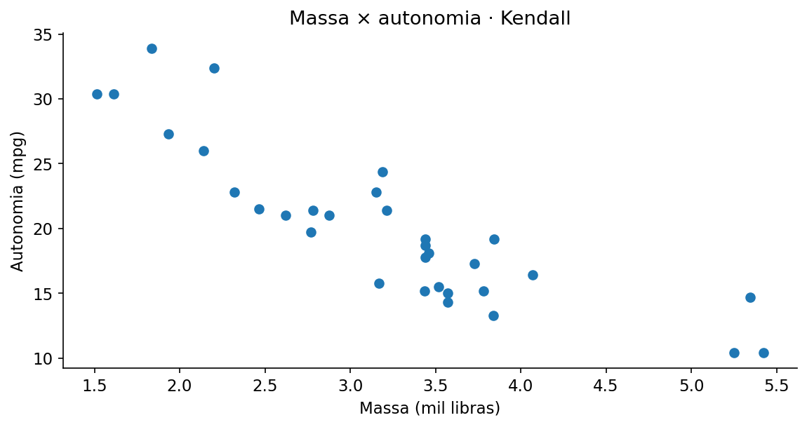

Correlação tau de Kendall
Avalia a concordância entre as ordenações de duas variáveis.
01 · O que é?
Avalia a concordância entre as ordenações de duas variáveis.
02 · Pressupostos e como verificá-los
- Pares independentes.
- Medidas ordinais ou quantitativas.
- Empates são tratados pela versão.
Confira o delineamento da pesquisa e os gráficos exploratórios. A validade inferencial depende dos pressupostos do modelo, não apenas do resultado de um teste diagnóstico.
03 · Hipóteses e estatística de teste
Hipóteses
Alternativas bilateral e unilaterais
Bilateral: \(\tau\neq 0\). Detecta desvios em qualquer direção.
Unilateral à direita: \(\tau>0\). Investiga aumento ou associação positiva.
Unilateral à esquerda: \(\tau<0\). Investiga redução ou associação negativa.
A direção deve ser escolhida antes de observar os resultados. Para o teste t e os testes de associação, use
alternative = "two.sided"
,
"greater"
ou
"less"
. Em testes com grupos ou pares, a interpretação da direção depende da ordem dos grupos ou da subtração.
Estatística, estimador ou critério de ajuste
Em que:
- \(C\)
- número de pares concordantes
- \(D\)
- número de pares discordantes
- \(T_X,T_Y\)
- números de pares empatados apenas em X ou Y, conforme a convenção da fórmula
Os valores amostrais são obtidos diretamente dos dados; os estimadores, pesos ou coeficientes específicos são calculados pelas funções do R indicadas no exemplo. Não substitua parâmetros desconhecidos por valores arbitrários.
04 · Como interpretar os resultados?
\(p<0{,}05\) : evidência de associação ordinal; tamanho de \(\tau\) expressa concordância relativa.
Além da decisão ao nível de 5%, examine a direção e a magnitude do efeito, seu intervalo de confiança e a adequação dos pressupostos. Um valor-p não quantifica a importância prática do resultado.
Em um teste unilateral, a rejeição só sustenta a direção previamente definida. Um resultado de sinal contrário não autoriza inverter a hipótese após examinar os dados.
05 · Como executar no R?
Examine os dados, execute a análise e compare os resultados com os valores e gráficos apresentados a seguir.
Copie o código para o RStudio ou baixe o arquivo .R para executar o exemplo completo.
06 · Exemplo de aplicação
Contexto dos dados
Em mtcars, características como massa e autonomia permitem ordenar os veículos.
Objetivo da análise
Verificar se a ordenação por uma característica tende a concordar ou discordar da ordenação por outra.
# Correlação tau de Kendall ----
# Ajuste e resultados ----
print(cor.test(mtcars$wt, mtcars$mpg,
method = "kendall", exact = FALSE))
# Visualização e diagnóstico ----
plot(mtcars$wt, mtcars$mpg, pch = 19, xlab = "Massa", ylab = "Autonomia")
# Análises unilaterais: use somente a direção definida antes da análise ----
# H1: concordância positiva entre as ordenações
print(cor.test(mtcars$wt, mtcars$mpg, method = "kendall", exact = FALSE, alternative = "greater"))
# H1: concordância negativa entre as ordenações
print(cor.test(mtcars$wt, mtcars$mpg, method = "kendall", exact = FALSE, alternative = "less"))
Saída numérica para conferência
Valores recalculados independentemente com os mesmos dados; a formatação da saída pode diferir da apresentada pelo R.
Kendall correlation estimate = -0.727832, p-value = 6.7058e-09
Gráfico dos dados

A associação entre massa e autonomia é negativa (coeficiente = -0.728); o valor-p é 6.71e-09. A interpretação depende de o método investigar associação linear, monotônica ou concordância de postos.
Resultados e interpretação
O código apresenta uma sugestão de aplicação; a análise deve ser adaptada aos dados e ao objetivo do estudo.

Prof. Dr. Cássius Henrique Xavier Oliveira
Professor · ICTIN/UFLA · Estatística, Confiabilidade e Ciência de Dados.
Conheça minha trajetória e projetos →